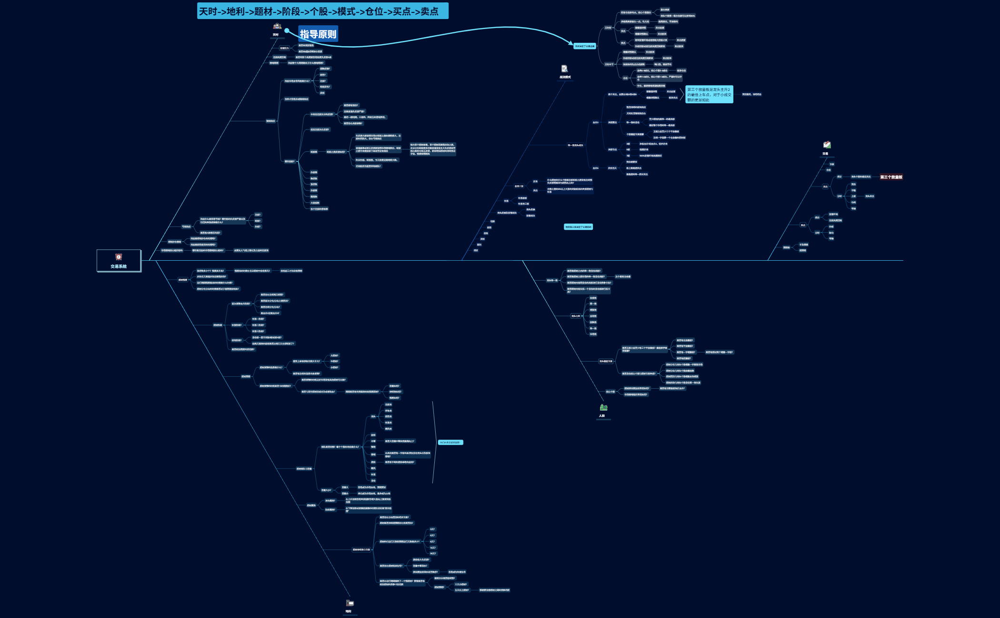

MESSI-10 / FRAMEWORK · 2026.10.06
交易系统完整框架
天时决定交易选择，地利与人和决定交易标的。
- 天时
- 地利
- 题材
- 阶段
- 个股
- 地位
- 模式
- 仓位强天时还是弱天时
- 买点择日和分时
- 卖点择日和分时
天时不好慢进快出，天时好快进慢出。
依据本人提供的《交易系统.xmind》整理。下方“执行补充”用于明确记录与验证，不新增量化交易阈值；原始节点和版本差异分别保留。
01 / 天时
先看市场奖励什么、惩罚什么
- 赚钱效应与市场主导风格
- 赚钱效应最重要，情绪周期次重要。分别观察超跌反弹、趋势、连板、断板反包、反核的正反馈，判断怎样才容易形成赚钱效应；不把擅长的模式当成市场正在奖励的模式。
- 情绪指标与次日反馈
- 中高位与低位连板次日溢价、三进四及四进五晋级、高标杀跌、各身位晋级率、断板率及断板后的反馈、炸板率、跌停数、涨停数、腾落数与大盘指数一起记录。昨日炸板断板股今天是修复还是继续大跌？老高标反包能否带动梯队？强题材分化后，核心正反馈与后排负反馈分别看。
- 亏钱效应、监管与高度压制
- 检查连板、断板、炸板中哪些更容易亏钱，是否到某个高度便出现极度负反馈或A杀。监管函、停牌风险、监管状态分别核验，不把个人监管红线当作交易所统一规则。
- 周期、短线情绪与市场阵眼
- 辨认整个大周期所处阶段，区分短线炒作时期与趋势投资时期。人气榜与此前连板龙提供情绪核心候选，再看实际承接、带动与负反馈；人气不是买入确认。
02 / 地利
题材强度、预期、节奏与阶段一起看
- 强度与预期
- 记录涨停数、当日题材排名、强弱启动、运行期间最强的一天，以及分化分歧是否过弱。导图“排名前三才比较有预期”保留为个人观察口径，不当作充分买入条件。
- 催化与竞争时机
- 消息是什么、想象空间是大中小哪类、有无持续消息发酵？是否刚好缺少其他题材，是否与其他题材形成对流或吸血？突然爆发的新方向，分别比较容量、持续性与强度。
- 题材属性与新方向竞争
- 原图区分进攻属性（上升波段共振指数、带动积极氛围）与防御属性（下降或横盘时的抱团），都须实际反馈验证。运行期间爆发强题材，要看次日能否续强，是三天小题材还是五天以上预期，以及是否形成新旧题材竞争卡位。
- 梯队与容量
- 逐项标注龙头、前排、中军、弹性、情绪、后排、跟风、补涨与身位；龙头还分连板龙、伴生龙、趋势龙、补涨龙、跟风龙。看容量中军能否震荡向上、高位一字是否撑住情绪、后排是否持续助攻。大容量与主线预期、小容量与支线预期，是导图经验，不是必然对应。
- 运行时钟与结束信号
- 写已运行天数与预期运行天数，保留3、5、8、12、30天的观察提问，不预设固定周期。检查经典分歧回流、持续超预期修复，以及后排极大负反馈、容量中军深水、辨识度前排深水或跌停等吹哨信号。
- 阶段与新旧切换
- 首次发酵主升：是否两天续强、首次分化或分歧后回流、连续分化或分歧，是主升2还是主升3？补涨：一、二、三阶段分别标注。轮动：身位是否反复卡在三四板、前两天首板是否集中断板？最后核验新旧周期是否切换。
03 / 人和
选个股之后，再确认核心地位
- 核心与七维
- 检查题材辨识度前排是否跟随板块主升、市场情绪锚表现如何。导图七维完整保留：价值性、第一性、领涨性、主动性、抗跌性、唯一性、市场性；主动性与领涨性分开观察。
- 量能换手
- 逐板标注全放量、半放量、缩量一字、起量，检查五板之前至少三个半放量板的原图问题、是否超过两个缩量一字，以及换手是否健康。计数、折算、第三个量能板和转强确认的关系，按手册待统一口径核验。
- 四种共振关系
- 题材启动与个股身位第一性先涨；题材分化与龙头聚焦缩量一字；题材分歧与个股放量抗跌；题材回流与个股缩量领涨。实际不共振时也要记录，不只保留符合预期的样本。
- 双唯一性与卡位
- 题材内唯一身位与跨题材市场唯一身位分别核验，导图认为后者更有含金量。二进三、三进四、四进五都看同身位PK与低一身位的低卡高；竞争未决不自封龙头。
04 / 战法模式
不同模式，各有自己的窗口
| 模式 | 本人规则与边界 |
|---|---|
| 主升2 · 战法1 | 主要在3进4、4进5。爆量弱转强为前置买点，缩量转强确认为标准买点；第三个放量板是导图强调的最佳上车点，小成交额参考百花医药、津药药业。前置不是提前猜回封，仍须既定条件成立。 |
| 主升3 · 战法2 | 反核当天是最后的唯一择日窗口；导图写“竞价就要买，板上是最后买点”。保留首日先手纪律，错过不追；具体反核判定、监管状态、仓位与失效细则仍待确认。 |
| 总龙二波 · 战法6 | 断板后没有连续强负反馈，而转为趋势向上。结合企稳、突破上一波最高价、当日相对昨收涨幅达到5%、题材与补涨共振，并在当天尾盘确认后买；5%不以前高为基准，不等次日追。 |
| 补涨龙三板 · 战法8 | 三板是主要观察节点，买点基本唯一，错过谨慎。最新专项卖点为四板板上兑现，快进快出；不及预期或总龙退出可更早离场。3进4要求更强唯一性与环境，约四板为经验范围而非固定上限。 |
| 龙头反抽及监管 · 战法7 | 首次调整、缩量企稳后的反抽，与主升3反核继续连板分开，不互借买点。 |
| 补涨首板 / 切换 / 埋伏 | 三类原图模式另列，不与补涨龙三板混淆。切换对照战法3；补涨首板与埋伏未给出独立细则，保留为观察分类，不临场套用其他模式买点。 |
| 趋势 / 低吸 / 反核 / 套利 | 导图另列的四类模式全部保留。趋势可对照战法4；未给出独立细则的模式先作为观察分类，不因列入框架就视为可执行策略。 |
- 主升2四项要点与关键节点
- 强且持续的板块效应、天时好且赚钱效应在、唯一身位、健康量能共同核验；至少题材内最高标，最好市场唯一最高标。连续一字要看全放量回封。导图将三板列为主升1切主升2的初步定龙、五板列为彻底定龙、七板列为“100%监管红线高度附近”；这些是个人阶段观察，不是到板数便自动定龙、买入或触发监管的保证。
05 / 交易
择日、分时、仓位、预期差落实到动作
- 节奏与仓位先写定
- 先分强弱天时，再写总仓、单票仓、最大可承受损失、首次确认仓位及加减仓条件。慢进是等确认，不是错过后追；快进也不是省略确认。不能用仓位修复错误或摊低失效交易的成本。
- 买点 · 择日与分时
- 导图列第三个放量板为龙头最佳买点观察；与缩量转强确认的衔接须按模式和量能口径区分。分时节点完整保留：竞价、半路、上板、均线、零轴；并非每种模式都能使用所有节点。
- 卖点 · 择日与分时
- 择日关注个人监管红线与连板高度压制；分时关注炸板、破均、零轴。具体触发、减仓或清仓、剩余持仓退出与成交检查在买前写定，不临盘把失效解释为正常分歧。
- 预期差
- 不及预期与超预期都要对照买前记录：预期的日期、板块反馈、核心表现、量能和分时触发是什么？超预期不能豁免风险，不及预期不能靠追加仓位证明判断。
06 / 天时决定交易选择
强天时快进慢出，弱天时慢进快出
强天时 · 条件成立才前置
按最新补充，龙头首笔为该票计划仓位的80%，不是账户80%；后续有确认才加，不自动补满。爆量弱转强为前置，缩量转强确认为标准。逻辑有效时多留持有耐心；卖点分后置与标准两种：个人监管红线、超级大烂板，以及炸板烂板或高度压制。
网站已确认预算：总仓可到100%，单票60%–80%，仍受熟悉模式、最大亏损与失效退出约束，不是每天必须满仓或无条件锁仓。
弱天时 · 等确认，兑现前置
按最新补充，龙头首笔为该票计划仓位的50%，如单票预算占账户40%，首笔占账户20%。慢进快出、晚进早出，优先等缩量转强确认；炸板烂板或高度压制等触发按预案处理，不套强环境持有预期。机会不足可以空仓。
原图同时列6–8成总仓/核心3–4成，以及更弱时1–4成总仓/核心1–2成。网站现行70%–80%/30%–40%与原图的范围差异在下方单列，不能混成自动仓位分配。
共振 / 执行 / 复盘
把题材节点落实到仓位与买卖
SOURCE / 原始模型
完整导图原文
下方保留原文、层级与未展开节点，包括旧版九步顺序及原图的“快进快出”。执行以本页标注的最新更正为准。

VERSION / 不混淆口径
原图保留，执行口径明确
- 决策顺序
- 原图九步在“个股”之后未单列“地位”；当前执行遵从本人最新十步顺序，个股后单独确认地位，仓位区分强弱天时，买卖都区分择日与分时。
- 弱天时进出节奏
- 原图“快进快出吃点小肉就跑”与“晚进早出”并列。按最新明确更正，执行使用“天时不好慢进快出，天时好快进慢出”，不回改导图原文。
- 仓位范围
- 原图一般中下天时总仓60%–80%，网站已确认70%–80%；核心均为30%–40%。原图另列更弱时总仓10%–40%、核心10%–20%及空仓。两个总仓范围的适用分界待本人确认，暂不覆盖现行预算，也不与当日更低上限冲突。
- 量能与尚未完成的模式
- “三个半放量板”“第三个放量板”、全放量折算及缩量确认的衔接继续核验。主升3择日已补充，竞价反核判定、仓位和退出触发仍未量化；“指导原则”空节点与只列名称的模式保留，不虚构已确认规则。
本页为本人交易框架与复盘记录，不构成通用投资建议，不保证策略有效。整理补充不把经验窗口、仓位范围、监管红线升级成市场必然规律。